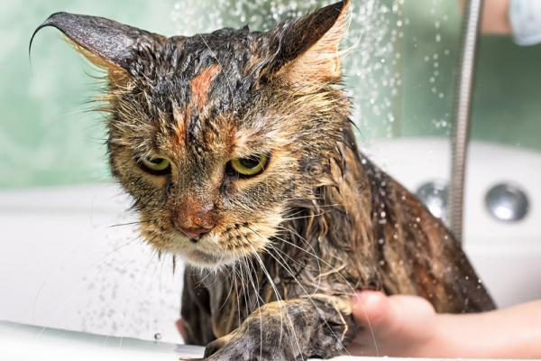

Porque gatos não gostam de água?

Você já deve estar careca de saber que a grande maioria dos gatos não gostam de água e que
mesmo que os felinos sejam muito higiênicos, um banho as vezes é necessário. Isso pode ser um
verdadeiro pesadelo tanto pro seu bichinho, quanto pra você. Mas o que quase ninguem sabe é quase
a origem e algumas características dos felinos influenciam nisso.
Acredita-se que provavelmente os felinos vieram do Oriente-médio, onde há muitos desertos, então,
isso explicaria a aversão à água.
Fatores que influenciam o medo
-
Sistema Respiratório Frágil: O Sistema Respiratório felino é muito frágil, por isso, está
sucetível a infecções caso ocorra algum descuido durante o banho.
- Territorialismo e Olfato: Os gatos são muito territorialistas. E para ganhar a batalha no domínio de diferentes espaços, o cheiro é muito importante. Um banho forçado pode modificar seu odor, deixando-o inseguro.